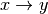
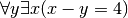
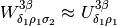

Here are some tips for using Sphinx and reStructuredText. The idea is to present a selection of the various formatting and other features provided by Sphinx in a form you can see (the html version you are now reading) as well as quick access to the source file so you can see how to produce it yourself.
Note
Every page on the doc site shold have a Show Source link in the right-hand panel. If you look to the right you should see the sections Table Of Contents, Previous topic, and This Page, under which you’ll see the Show Source link. By clicking this you’ll see the actual source file used to produce that documentation page.
We’ve created a set of pre-defined templates to make it easy to get started on certain document types.
You use inline markup to make text italics, bold, or monotype.
Please use italics to refer to field/column names and monotype to refer to field/column values. For example, you might given an example of how one should enter the code x in the Foo column.
You can insert a block comment like the following:
This is a multiline
block comment
This is the custom for representing code blocks:
import numpy as np
x = np.random.rand(12)
Or include code directly from a file:
from collections import defaultdict as dd
def autodict(): return dd(autodict)
d = autodict()
d['an']['arbitrarily']['deep']['dictionary'] = "yes!"
Use `Link text <http://target>`_ for inline web links. For example, here’s a link to the LDP portal website.
You can also use this style of linking to link to section titles within a document. For example, to jump to the Tables section of this page you’d use `Tables_`.
To link to a label (i.e., an invisible anchor point) in one of your documents you can use :ref:`label-name`. For example, to jump to the Tables label below you’d use :ref:`tables`. Labels permit cross-referencing arbitrary locations (i.e., within or between documents). Create a label by placing .. LABEL-NAME: before whatever section of your document you wish to label.
You can link to documents instead of specific places within a document (sections or labels) using :doc:. For example, this should take you to the index.
You can also create links to files for download using :download:. For example, try downloading this sample script.
It’s easy to set up various kinds of lists.
This shows you how to make a simple table. If you only want to make a list see Lists.
| Name | Status |
|---|---|
| Kristi Schonwald | 94 |
| Research Assistant | 36 |
| Jason Voigt | -22 |
You can also create grid based tables.
| time | line | p_utts |
|---|---|---|
| 0:00:00 | 1 | hi there. |
Or tables based on CSV (comma-separated values) data.
| Name | Position | Status |
|---|---|---|
| Kristi Schonwald | Project Admin | 94 |
| Max Masich | Annotator in Chief | 88 |
| Jason Voigt | Data Munger | -22 |
See the docutils guide for options available for the csv-table directive.
Glossaries enable you to define any technical terms once in a centralized location. Then, when using a defined term you can use the :term: role to link to the term’s definition in the glossary.
For example, here’s a little glossary created by the .. glossary:: directive:
MY SAMPLE GLOSSARY
Having defined our terms we can then use any of these terms in our documentation, such as the term foo, and have it linked to our glossary definition for quick lookup.
Note that if you’re writing official project documentation we have a global project glossary in the root docs directory: site/docs/glossary.rst. This file should contain definitions for any and all technical terms used throughout the project documentation. For example, have a look at the definition of disjoint prepositional phrase.
You can include inline math like  or . Or more complicated stuff using the .. math:: directive:

It’s not often used, but you can create centered, boldfaced text using the .. centered:: directive. For example, it was used above to set off MY SAMPLE GLOSSARY.
You’ll see that we also used separators to set off the glossary. You can insert a separator by putting a series of four or more dashes (-----) on its own line preceded and followed by blank lines.
You can create notes that standout using the .. note:: directive:
Note
This is a note to catch the reader’s eye.
You can also use the .. warning:: directive to warn readers:
Warning
This is a note to warn the reader.
If you need to refer to multiple related areas of your documentation and/or external docs, you should use the .. seealso:: directive.
See also
Sphinx docs. Additional details on the seealso directive including the short form.
Links. Description of how to create simple inline links.
If you’re describing some new feature or rule, you should specify the version number of the code or documentation when it was added using the .. versionadded:: directive.
New in version 1.1: The versionadded directive.
If you’re changing some feature or rule, there’s a similar .. versionchanged:: directive.
Changed in version 1.2: The versionchanged directive.
To create more compact lists that use horizontal space, try the .. hlist:: directive:
|
|
|
For a brief intro to reStructuredText, see this primer.
For a nice reStructuredText cheat sheet, see this quick reference
The Sphinx documentation can be found here.
There’s also a nice little Sphinx tutorial that shows you how to get up and running quickly.
.. _tips:
**************************
Quick tips for doc authors
**************************
Here are some tips for using Sphinx and reStructuredText. The idea is to
present a selection of the various formatting and other features provided by
Sphinx in a form you can see (the html version you are now reading) as well as
quick access to the :ref:`source file <tips-literal>` so you can see how to produce it yourself.
.. note::
Every page on the doc site shold have a *Show Source* link in the
right-hand panel. If you look to the right you should see the sections
**Table Of Contents**, **Previous topic**, and **This Page**, under which
you'll see the *Show Source* link. By clicking this you'll see the actual
source file used to produce that documentation page.
Templates
=========
We've created a set of pre-defined templates to make it easy to get started on
certain document types.
FAQs
----
A Frequently Asked Question document or FAQ is simply a list of frequently asked
questions with links to answers. (See the simple FAQ template :doc:`here
<templates/faq_simple>` or the section FAQ template :doc:`here <templates/faq>`.)
----------------
.. _formatting-text:
Formatting text
===============
You use inline markup to make text *italics*, **bold**, or ``monotype``.
* one asterisk: ``*text*`` for emphasis (*italics*),
* two asterisks: ``**text**`` for strong emphasis (**boldface**), and
* backquotes: ````text```` for code samples (``monotype``).
Please use *italics* to refer to field/column names and ``monotype`` to refer to field/column values. For example, you might given an example of how one should enter the code ``x`` in the *Foo* column.
You can insert a block comment like the following::
This is a multiline
block comment
This is the custom for representing code blocks::
import numpy as np
x = np.random.rand(12)
Or include code directly from a file:
.. literalinclude:: code/autodict.py
.. _links:
Links
=====
Use ```Link text <http://target>`_`` for inline web links. For example, here's a link to the `LDP portal website <https://ldp.spc.uchicago.edu>`_.
You can also use this style of linking to link to section titles within a document. For example, to jump to the Tables_ section of this page you'd
use ```Tables_```.
To link to a label_ (i.e., an invisible anchor point) in one of your
documents you can use ``:ref:`label-name```. For example, to jump to the
:ref:`tables` label below you'd use ``:ref:`tables```. Labels permit
cross-referencing arbitrary locations (i.e., within or between documents).
Create a label by placing ``.. LABEL-NAME:`` before whatever section of
your document you wish to label.
You can link to documents instead of specific places within a document (sections or labels) using ``:doc:``. For example, :doc:`this <index>`
should take you to the index.
You can also create links to files for download using ``:download:``. For
example, try downloading :download:`this sample script <code/autodict.py>`.
.. _label: http://sphinx.pocoo.org/markup/inline.html#cross-referencing-arbitrary-locations
.. _lists:
Lists
=====
It's easy to set up various kinds of lists.
Bullet lists
------------
Here are points *a*, *b*, and *c*:
* point *a*
* subpoint
* subpoint
* point *b*
* point *c*
Enumerated lists
----------------
Here are points **A**, **B**, and **C**:
#. point **A**
#. point **B**
#. point **C**
.. _tables:
Tables
======
This shows you how to make a simple table. If you only want to make a list
see :ref:`lists`.
=================== ============
Name Status
=================== ============
Kristi Schonwald 94
Research Assistant 36
Jason Voigt -22
=================== ============
You can also create grid based tables.
+------------+-----------+-----------+
| time | line | p_utts |
+============+===========+===========+
| 0:00:00 | 1 | hi there. |
+------------+-----------+-----------+
Or tables based on CSV (comma-separated values) data.
.. csv-table:: STATUS BREAKDOWN
:header: "Name", "Position", "Status"
:widths: 12, 12, 5
"Kristi Schonwald", "Project Admin", 94
"Max Masich", "Annotator in Chief", 88
"Jason Voigt", "Data Munger", -22
See the docutils guide for options available for the csv-table_ directive.
.. _csv-table: http://docutils.sourceforge.net/docs/ref/rst/directives.html#id1
.. _images:
Images
======
Below you should see an image:
.. image:: _static/bolshevik.jpg
Glossary
========
Glossaries enable you to define any technical terms once in a centralized
location. Then, when using a defined term you can use the ``:term:`` role to
link to the term's definition in the glossary.
For example, here's a little glossary created by the ``.. glossary::``
directive:
----------------
.. _gloss:
.. centered:: MY SAMPLE GLOSSARY
.. glossary::
glossary
A glossary is an alphabetical list of terms in a particular domain of
knowledge with the definitions for those terms. Traditionally, a
glossary appears at the end of a book and includes terms within that
book which are either newly introduced or at least uncommon.
definition
A concise explanation of the meaning of a word or phrase or symbol.
language
A form of communication using words either spoken or gestured with the
hands and structured with grammar, often with a writing system
foo
A metasyntactic variable used to represent an unspecified entity. If
part of a series of such entities, *foo* is often the first in the
series, and followed immediately by *bar*, and *baz*.
Example: `Suppose we have two objects, foo, bar and baz.`
----------------
Having defined our terms we can then use any of these terms in our
documentation, such as the term :term:`foo`, and have it linked to our glossary
definition for quick lookup.
Note that if you're writing official project documentation we have a global
project glossary in the root docs directory: ``site/docs/glossary.rst``. This
file should contain definitions for any and all technical terms used throughout
the project documentation. For example, have a look at the definition of
:term:`disjoint prepositional phrase`.
Math
====
You can include inline math like :math:`x \rightarrow y` or :math:`\forall y \exists x(x-y = 4)`. Or more complicated stuff using the ``.. math::`` directive:
.. math::
W^{3\beta}_{\delta_1 \rho_1 \sigma_2} \approx U^{3\beta}_{\delta_1 \rho_1}
Miscellaneous
=============
It's not often used, but you can create centered, boldfaced text using the ``.. centered::`` directive. For example, it was used above to set off :ref:`MY SAMPLE GLOSSARY <gloss>`.
You'll see that we also used separators to set off the glossary. You can insert
a separator by putting a series of four or more dashes (``-----``) on its own
line preceded and followed by blank lines.
You can create notes that standout using the ``.. note::`` directive:
.. note::
This is a note to catch the reader's eye.
You can also use the ``.. warning::`` directive to warn readers:
.. warning::
This is a note to warn the reader.
If you need to refer to multiple related areas of your documentation and/or
external docs, you should use the ``.. seealso::`` directive.
.. seealso::
`Sphinx docs <http://sphinx.pocoo.org/markup/para.html>`_. Additional
details on the seealso directive including the short form.
:ref:`links`. Description of how to create simple inline links.
If you're describing some new feature or rule, you should specify the version
number of the code or documentation when it was added using the ``.. versionadded::`` directive.
.. versionadded:: 1.1
The `versionadded` directive.
If you're changing some feature or rule, there's a similar ``..
versionchanged::`` directive.
.. versionchanged:: 1.2
The `versionchanged` directive.
To create more compact lists that use horizontal space, try the ``.. hlist::``
directive:
.. hlist::
:columns: 3
* first item
* second item
* third item
* fourth item
* fifth item
* sixth item
* seventh item
* eighth item
* ninth item
.. _info:
Additional info
===============
For a brief intro to reStructuredText, see `this primer <http://sphinx.pocoo.org/rest.html>`_.
For a nice reStructuredText cheat sheet, see `this quick reference <http://docutils.sourceforge.net/docs/user/rst/quickref.html>`_
The Sphinx documentation can be found `here <http://sphinx.pocoo.org/contents.html>`_.
There's also `a nice little Sphinx tutorial <http://matplotlib.sourceforge.net/sampledoc>`_ that shows you how to get up and running quickly.
.. _tips-literal:
This file
=========
.. literalinclude:: tips.rst